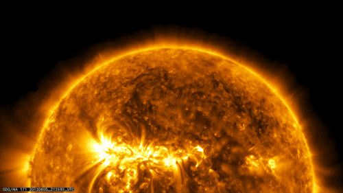

The Spirit of East Harlem. Credit: Original by Hank Prussing; restoration by Manny Vega, Jr.
Growing up in Spanish Harlem, New York City's light pollution denied me a clear view of the night sky — but it never stopped me from asking what lay beyond the steel and glass. The Moon was my first obsession, and from it came the questions that still drive my work: Where did the planets come from? Are there other worlds out there? Which of them could sustain an atmosphere, or even life?
Those questions now constitute my research program. I am a Flatiron Research Fellow at the Center for Computational Astrophysics (CCA), Flatiron Institute, NYC, working on an end-to-end observational framework to forecast atmosphere retention in nearby M-dwarf planetary systems.
My approach combines three threads: (1) a completeness-controlled transit survey of M-dwarfs in TESS Full Frame Images (NEMESIS); (2) multi-epoch stellar flare frequency distributions and activity evolution from TESS, K2, and ground-based photometry; and (3) Galactic-context characterization via Gaia kinematics and SDSS spectroscopic metallicities. The long-term output is a ranked, observation-ready target list for atmospheric characterization with JWST, Roman, and PLATO.
Before joining the CCA, I was a Postdoctoral Researcher at the American Museum of Natural History (2022–2024), a Postdoctoral Researcher at Vanderbilt University (2022), and a Visiting Graduate Student Fellow at George Mason University (2021–2022). I completed my PhD in Astrophysics at Vanderbilt University in 2022 (advisor: Dr. Keivan Stassun), my M.A. in Physics at Fisk University in 2018, and my B.S. in Astrophysics at UMass Amherst in 2013.
Refereed papers
First-author
Citations
h-index
Mentees
Metrics via SciX as of .
Research

My research program asks a single driving question: which nearby M-dwarf planets are most likely to retain an atmosphere, and how do we prioritize them for follow-up? Answering it requires connecting planet detection, stellar activity history, and Galactic context into one coherent framework.
NEMESIS: Exoplanet Transit Survey of Nearby M-dwarfs in TESS FFIs
Transit SurveyOpen-source Python
NEMESIS is an open-source Python framework for extracting, detrending, searching, and vetting time-series photometry from NASA's Transiting Exoplanet Survey Satellite (TESS) Full Frame Images (FFIs), optimized for nearby M-dwarf stars. Unlike searches restricted to preselected short-cadence targets, NEMESIS uses the FFIs to investigate M dwarfs that may have been observed only at the 30-minute cadence of the TESS Primary Mission.
The workflow starts with TESSCut image cutouts and constructs target-centered light curves through background estimation, aperture photometry, neighbor-contamination correction, quality masking, pixel-level decorrelation (PLD), and variability detrending. Each light curve is searched using both Box Least Squares (BLS) and Transit Least Squares (TLS), with automated diagnostics and LEO-Vetter tests used to characterize possible transits. Separate injection–recovery and orbit-scrambling experiments measure detection sensitivity and the rate of noise-generated false alarms. For candidates, follow-up modeling in the NEMESIS II analysis uses jaxoplanet transit fits and TRICERATOPS false-positive probabilities.
NEMESIS I (Feliz et al. 2021, The Astronomical Journal) introduced the survey and searched nearby M dwarfs observed in TESS Sectors 1–5, reporting 29 planet candidates, including 24 new detections. One candidate from this survey, TOI-7384 b, has since been confirmed in follow-up work.
NEMESIS II (Feliz et al., in preparation; November 2026 draft) expands the search to the complete TESS Primary Mission (Sectors 1–26). We analyzed 213,658 single-sector light curves from 113,047 M dwarfs within 100 pc. After automated vetting and cross-sector reconciliation, the catalog contains 525 distinct transit-like signals with converged transit fits. TRICERATOPS favors a planetary origin for 262 of these, including 232 on stars without previously cataloged TESS candidates or transiting planets. These remain planet candidates, not validated planets; the survey's injection–recovery and scrambling controls quantify the selection effects and noise contamination needed to interpret the population.
Pipeline workflow (Fig. 4). From FFI cutouts and PLD detrending through BLS/TLS searches, LEO-Vetter, transit fitting, and statistical false-positive analysis. Dotted steps distinguish the injection and scramble tests.
Transit gallery (Fig. 8). Twenty-one illustrative phase-folded signals with fitted transit models. These are candidate signals, not confirmed planets; some require additional astrophysical vetting.
Planet period–radius distribution (Fig. 15). The 232 new planet candidates compared with previously cataloged TESS candidates and transiting planets, with stellar insolation and reference boundaries shown for context.
Stellar flares are not just nuisances for transit searches — they are the primary record of a star's historical XUV output and thus the dominant driver of atmospheric escape. I am building multi-epoch flare frequency distributions (FFDs) for nearby M-dwarfs using TESS, K2, and ground-based photometry, with the goal of reconstructing each star's cumulative high-energy irradiation history.
Related work includes a NASA TESS Guest Investigator Cycle 9 proposal (PI: D. L. Feliz, under review): Long-Term Evolution of M-dwarf Flare Activity with K2, TESS, and Ground-Based Photometry. I am also a member of the ESA PLATO Flare Removal Working Group (2020–present), developing algorithms to detect and remove flare signatures from PLATO photometric time series.
Collaborative contributions: Paudel et al. 2024 (multiwavelength TESS/K2/Swift/HST M-dwarf flare survey); Cool Stars 22 poster on photometric activity cycles in M-dwarfs (Zenodo).
Future Directions: From Detections to Atmosphere Forecasts
TESS / SDSS-V / JWSTProposed Research
Which rocky planets around nearby M dwarfs retain atmospheres, and how does that depend on their host stars' activity, age, and chemistry? My next research direction is to move beyond finding candidate planets toward predictions that can be tested—and potentially falsified—with atmospheric observations. M dwarfs offer some of the most accessible rocky planets for JWST, but their long-lived magnetic activity can expose those planets to intense X-ray and ultraviolet (XUV) irradiation. Stellar luminosity alone may not capture the irradiation histories that determine atmospheric survival.
The radius valley distinguishes likely rocky and gas-rich planet populations statistically; it does not establish whether an individual rocky planet has an atmosphere today. The cosmic shoreline (Zahnle & Catling 2017) provides a complementary, empirical hypothesis: atmospheric survival depends on the competition between a planet's escape velocity and its historical, time-integrated XUV exposure. I use the Atmosphere Retention Metric (ARM) as a proposed measure of a planet's position relative to that boundary. The ARM is a predictor to be calibrated, not currently a measured probability of atmospheric retention.
Radius valley and cosmic shoreline. Left: M-dwarf planets and preliminary NEMESIS II signals in period–radius space. Right: escape velocity versus estimated historical XUV fluence, compared with the empirical shoreline and Solar System benchmarks. Colors illustrate the proposed ARM, not calibrated retention probabilities. Some planet masses are estimated rather than measured, and XUV histories remain uncertain. Figure from my November 2026 research proposal; click to enlarge.
First, characterize the planets and their stars. I will extend NEMESIS to longer multi-sector TESS light curves while measuring which signals the survey misses through injection–recovery and false-alarm controls. Rotation and flare measurements from TESS, K2, and ground-based data, combined with Gaia-based age constraints and SDSS-V chemical abundances, will inform ranges of plausible XUV histories. I will test differences between partially and fully convective M-dwarf hosts, whose magnetic evolution need not follow the same history.
Second, obtain masses where they have the greatest leverage. Planet masses and radii set escape velocities, but many potentially rocky M-dwarf planets lack useful mass constraints. I will prioritize precision radial-velocity observations (including facilities such as NEID and KPF), or transit-timing constraints where feasible, by asking which achievable mass measurement would most clearly separate competing atmospheric-retention predictions. This work will support an open catalog of planet masses, escape velocities, and a target-ranking tool.
Third, confront the forecasts with observations. Published JWST and other atmosphere-sensitive measurements will be treated as graded constraints—not simply as binary atmosphere detections—and compared with activity-informed shoreline predictions and the three-dimensional luminosity-based shoreline proposed by Berta-Thompson et al. (2026). If the available sample does not constrain both sides of the boundary, the scientifically meaningful result will be retention limits and prioritized follow-up targets, rather than an unsupported probability calibration. As the evidence grows, the framework can test whether atmospheric survival changes with stellar convective structure, age, or chemistry.
A Multi-Year Transit Search of Proxima Centauri
Ground-Based PhotometryPublished 2018 / 2019
Artist's impression of Proxima Centauri b. Credit: ESO.
Proxima Centauri, the nearest star to the Sun, hosts the radial-velocity-discovered planet Proxima Centauri b, with an orbital period of approximately 11.186 days. Finding transits would provide its radius and help determine its bulk composition, but Proxima is a magnetically active M dwarf whose flares, spot variability, and observational systematics can mimic or conceal transit-like signals. To investigate this, our collaboration assembled 329 epochs of ground-based photometry from 2006–2017, obtained with a worldwide network of small telescopes. Following quality cuts, 262 light curves formed the principal search sample.
Paper I — Blank et al. (2018), for which I served as corresponding author: We compared observations with published radial-velocity ephemerides and tentative transit claims. The 96 light curves overlapping those predictions did not independently corroborate the proposed transits, while demonstrating the star's persistent and complex photometric variability.
Paper II — Feliz et al. (2019): We carried out a blind Box Least Squares (BLS) search of the 262 high-quality light curves for periodic signals over approximately 1–30 days. False-alarm tests and 550 synthetic transit injections characterized what our data could detect. We found no convincing periodic transit signal. The observations strongly constrain a transit of the expected ~5 mmag depth at Proxima b's period in the tested configurations, and largely exclude transits deeper than ~3 mmag at periods shorter than five days. However, incomplete phase coverage and reduced sensitivity to shallower transits mean that all possible Proxima b transits cannot be ruled out.
This work helped establish a principle that now underpins my NEMESIS survey: a transit non-detection becomes scientifically informative only when its sensitivity is measured.
Observations phased to proposed ephemerides (Blank et al. 2018, Fig. 3). A subset of 19 observing nights compared against the published candidate transit timings.BLS power spectrum and significance thresholds (Feliz et al. 2019, Fig. 2). The strongest peaks, global false-alarm levels, and period-dependent thresholds used to evaluate candidate periodicities.
Injection–recovery sensitivity (Feliz et al. 2019, Fig. 8). Synthetic transit recovery across period and depth under different false-alarm thresholds, quantifying which signals the data could or could not detect.
Dax L. Feliz, Peter Plavchan, Samantha N. Bianco, et al.
NEMESIS: Exoplanet Transit Survey of Nearby M-dwarfs in TESS FFIs. I.
The Astronomical Journal, 161(5):247, May 2021.
[arXiv]
Dax L. Feliz, David L. Blank, Karen A. Collins, et al.
A Multi-year Search for Transits of Proxima Centauri. II. No Evidence for Transit Events with Periods between 1 and 30 days.
The Astronomical Journal, 157(6):226, Jun 2019.
[Journal]
David L. Blank, Dax L. Feliz** (corresponding author), Karen A. Collins, et al.
A Multi-year Search for Transits of Proxima Centauri. I. Light Curves Corresponding to Published Ephemerides.
The Astronomical Journal, 155(6):228, Jun 2018.
[Journal]
Key Collaborative Publications
Peter Plavchan, Thomas Barclay, Jonathan Gagné, …, Dax Feliz, et al.
A planet within the debris disk around the pre-main-sequence star AU Microscopii.
Nature, 582(7813):497–500, June 2020.
[Journal]
Heike Rauer, Conny Aerts, Cabrera, …, D. L. Feliz, et al.
The PLATO mission.
Experimental Astronomy, 59(3):26, June 2025.
[arXiv]
Karen A. Collins, Kevin I. Collins, Joshua Pepper, …, Dax L. Feliz, et al.
The KELT Follow-up Network and Transit False-positive Catalog: Pre-vetted False Positives for TESS.
The Astronomical Journal, 156(5):234, Nov 2018.
[Journal]
Selected Peer-Reviewed Publications (Nth Author)
Curated for thematic relevance to M-dwarf exoplanet detection, stellar activity, and time-domain photometry.
Full list of 31 papers on SciX.
Madison G. Scott, Georgina Dransfield, Mathilde Timmermans, …, Dax L. Feliz, et al.
Two temperate Earth- and Neptune-sized planets orbiting fully convective M dwarfs.
MNRAS, January 2026.
[arXiv] — Confirms NEMESIS I candidate TOI-7384 b.
Rishi R. Paudel, Thomas Barclay, Allison Youngblood, …, Dax L. Feliz, et al.
A Multiwavelength Survey of Nearby M Dwarfs: Optical and Near-ultraviolet Flares and Activity with Contemporaneous TESS, Kepler/K2, Swift, and HST Observations.
ApJ, 971(1):24, August 2024.
[Journal]
Lionel J. Garcia, Daniel Foreman-Mackey, Catriona A. Murray, …, Dax L. Feliz, et al.
nuance: Efficient Detection of Planets Transiting Active Stars.
AJ, 167(6):284, June 2024.
[arXiv]
Justin M. Wittrock, Peter P. Plavchan, Bryson L. Cale, …, Dax L. Feliz, et al.
Validating AU Microscopii d with Transit Timing Variations.
AJ, 166(6):232, December 2023.
[arXiv]
Ian Stotesbury, Billy Edwards, …, Dax L. Feliz, et al.
Twinkle: a small satellite spectroscopy mission for the next phase of exoplanet science.
SPIE, 12180:1218033, August 2022.
[arXiv]
Justin M. Wittrock, Stefan Dreizler, Michael A. Reefe, Brett M. Morris, …, D. L. Feliz, et al.
Transit Timing Variations for AU Microscopii b and c.
AJ, 164(1):27, July 2022.
[arXiv]
Christina Hedges, Alex Hughes, George Zhou, …, D. L. Feliz, et al.
TOI-2076 and TOI-1807: Two Young, Comoving Planetary Systems within 50 pc Identified by TESS.
AJ, 162(2):54, August 2021.
[Journal]
Heike Rauer, Conny Aerts, …, D. L. Feliz, et al.
The PLATO mission.
Experimental Astronomy, 59(3):26, June 2025.
[arXiv] — ESA PLATO Flare Removal Working Group member.
Selected invited and contributed talks. Full record in CV.
Invited Colloquia & Seminars
InvitedFrom Exoplanet Detections to Atmosphere Forecasts Around Nearby M-Dwarfs Exoplanet and Stars Seminar · Yale University Astronomy Dept., November 2026
[Slides]
InvitedFrom Exoplanet Detections to Atmosphere Forecasts Around Nearby M-Dwarfs Departmental Seminar · NYC College of Technology Physics Dept., February 2026
[Slides]
InvitedNEMESIS I: Exoplanet Transit Survey of Nearby M-dwarfs in TESS FFIs I
MIT TESS Science Talk (Mar 2021) ·
Rubin LSST TVS Seminar (Jun 2021) ·
Center for Exoplanets & Habitable Worlds Seminar, Penn State (Sep 2021)
Invited Conference & Workshop Talks
InvitedNEMESIS II: Exoplanet Transit Survey of Nearby M-dwarfs in TESS FFIs
Emerging Researchers in Exoplanets (ERES) X, Princeton University (Jun 2025) ·
"From Trends to Transits" Workshop, University of New Mexico (Aug 2025)
InvitedM-dwarfs are cool! AstroFest, Flatiron CCA, September 2024 & September 2025
InvitedTwinkle, Twinkle Little Star Twinkle and the Next Generation of Exoplanet Scientists Conference, September 2021
Contributed Talks & Posters
ContributedNEMESIS II: Exoplanet Transit Survey of Nearby M-dwarfs in TESS FFIs
TESS Science Conference III, MIT (Jul 2024) [Zenodo] ·
Sagan Summer Workshop, Caltech (Jul 2025) [Poster]
PosterCan Photometric Flares Be Used To Identify Activity Cycles in M-dwarf Stars? Cool Stars 22 (Jul 2024) [Zenodo]
PosterNEMESIS I: Exoplanet Transit Survey of Nearby M-dwarfs in TESS FFIs I
Cool Stars 20.5 (Mar 2021) [Zenodo] ·
TESS Science Conference II (Aug 2021) [Zenodo]
Dissertation & Thesis Defenses
DefensePhD Dissertation Defense, Vanderbilt University [Slides]
DefenseA Multi-Year Transit Search of Proxima Centauri — Master's Thesis Defense, Fisk University August 2018 [Slides]
I have mentored 14 students across high school, undergraduate, and graduate levels. Projects span exoplanet transit detection, stellar flare analysis, and time-series modeling. Trainees have advanced to PhD programs, staff scientist positions, and industry roles.
Graduate Students
CUNY Master's · CCA · 2024–Present
Andrea Bracamonte, CUNY Graduate Center
Searching for M-dwarf Coronal Mass Ejections with TESS and SDSS-V. Co-advised with Dr. Ruth Angus.
Project feeds CME detection framework and flare-rate priors into the NEMESIS ARM program.
CUNY Master's · AMNH/CCA · 2022–2024
Ryan Lebron, CUNY Graduate Center
Using Gaussian Processes to model stellar rotation in Zwicky Transient Facility photometry. Co-advised with Dr. Ruth Angus.
GP-derived rotation period catalog used as stellar activity priors in NEMESIS ARM.
Undergraduate Students
Barnard Individual Research Course (PHYS-BC3900) · Flatiron CCA · 2026
Madeline J. Maldonado Gutierrez, Barnard College of Columbia University
Evaluating Planet Vetting Robustness Across TESS Photometric Pipelines.
Barnard Summer Research Institute · AMNH · 2024
Detection and Validation of Transiting Exoplanets Around Nearby M-dwarf Stars.
AMNH REU · 2023
Maliyah Adams, Arizona State University
Detecting Exoplanets Around Nearby M-dwarf Stars from the Revised TESS Habitable Zone Catalog.
Central American-Caribbean Bridge Program · 2020–2021
Bryan Villarreal Alvarado, Universidad de Costa Rica
Recovery of known TESS Objects of Interest from TESS FFIs.
Summer Research Internship · Vanderbilt · 2019–2021
Samantha N. Bianco, Vanderbilt University (co-mentored with Dr. Keivan Stassun)
TESS transit survey of M-dwarf stars.
Co-author on Feliz et al. 2021. First student to complete an Immersion Vanderbilt project. Now at STScI. Press coverage.
Summer Research Internship · Vanderbilt · 2019–2020
Mary Jimenez, George Mason University (co-mentored with Dr. Peter Plavchan)
Blind transit survey of TESS data for M-dwarf systems.
Co-author on Feliz et al. 2021.
High School Students
AMNH Science Research Mentoring Program · 2023–2024
Thamim Chowdhury, Shreeya KC, Kylor Ghai
Detection of Transiting Exoplanets and Eclipsing Binaries Around Nearby M-dwarf Stars.
AMNH Science Research Mentoring Program · 2022–2023
August Fischer, Donovan Bradley, Jashcelyn Canada
Detection of Transiting Exoplanets and Eclipsing Binaries Around Nearby M-dwarf Stars.
School for Science and Math at Vanderbilt · 2019
Felix Bean, Hunter's Lane High School
Detecting exoplanet transits in TESS light curves.
CUNY Bridge Programming Bootcamp
Each August since 2022, I serve as curriculum developer and lead instructor for a two-week programming bootcamp welcoming incoming students to the CUNY Master's Program in Astrophysics. The bootcamp is designed for students of varied computational backgrounds and is built around the tools and workflows they will encounter immediately in their graduate research.
What the course covers
The curriculum spans two weeks of daily instruction (~10–15 students per cohort) and includes Python fundamentals, scientific computing with NumPy and pandas, data visualization with Matplotlib, working with astronomical data formats (FITS, light curves, catalogs), version control with Git/GitHub, and an introduction to the NYC astronomy community and its research groups. All materials are open and publicly available.
Who it is for
Incoming students in the CUNY Master's in Astrophysics program — particularly those coming from institutions with limited access to research computing infrastructure. No prior Python experience is assumed. The course is paced to bring students from first principles to research-ready in two weeks, with an emphasis on the specific tools used in time-domain photometry and exoplanet research.
Editions
August 2022 · August 2023 · August 2024 · August 2025